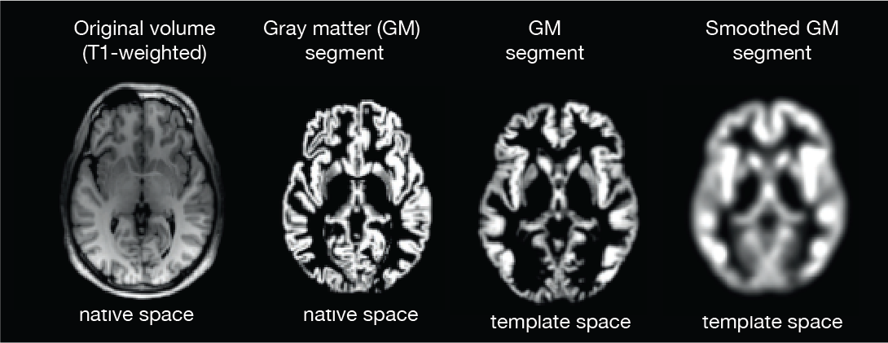
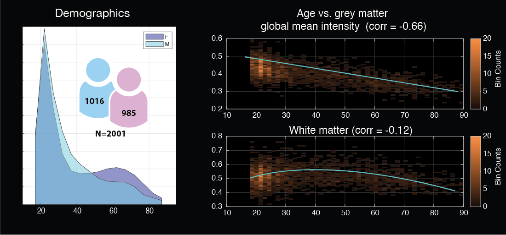
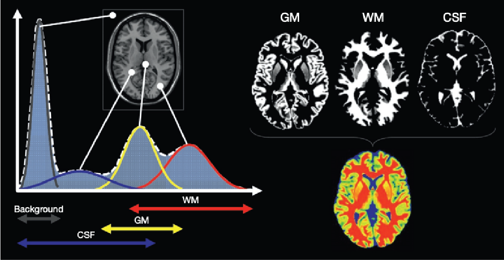
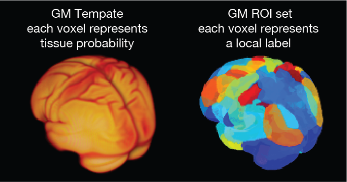

Home assignment : Ageing and Structural VBM
Contents
Home assignment : Ageing and Structural VBM¶

What is voxel-based morphometry (VBM)¶
Voxel-based morphometry is a method to allows to approximate structural brain maps grey matter intensity to compare between or within individuals
The basic idea is to map brains to a common space and compare voxel-wise characteristics.
One volume has 121 x 145 x 121 voxels each a potential feature.
For more information see Intro to VBM
Basic hypothesis¶

Is there a strong association between age and grey matter global intensity?
In this assignment we are using grey matter voxel-based morphometry volumes that were meticulously collected by Prof James Cole. (see Cole et al., 2015, Annals of Neurology).
We will use a carefully selected sample of 100 volumes from the much larger data-base. In the images above we see strong association exists between grey matter decline and age.
The human brain changes throughout the lifespan, with well-characterised reductions in grey matter volume beginning in early adulthood. White matter volume follows a non-linear trajectory, increasing in volume until middle age, before decreasing into older age. For more information read for example Good et al.,2001, NeuroImage
Using a template to construct a constrained threshold¶

The DARTEL template represents the probability of a voxel to be associated with a specific tissue type.
The idea is to map simultaneously three independent tissue types using a non-linear registration method
This allows the formation of a cortical ribbon that allows us to quantify grey matter intensity only
Dealing with the curse of dimensionality¶
Global measures lack spatial specificity
The voxel wise solution is too specific and has problems of multi-collinearity or in lay terms redundancy
One established solution lies in parcellating the statistical space into regions of interest (ROI)
Parcellation - “To divide into separate parcels, parts, or portions”

Brain age dataset¶
I created a dataset of 100 brains where I extracted some measures into tabular form
For those interested in the processed mr volumes here is a link to download it as well
The dataset has the following data :
AgeId - a unique identifier that matches the mr volumes
Sex - Binary categorical measure of sex
Age in years (and where available in decimals)
GMmean - grand mean intensity of the volume
gMmean - masked mean (i.e. omitting zeros)
m_roiMean - mean across roi’s
roiMean_i - ROI specific average
To download the dataset use the following link :
https://tinyurl.com/28j4u9ymOnce you downloaded it create a sklearn pipeline and compare different regression estimators to identify the best age approximation possible
You can use any information available